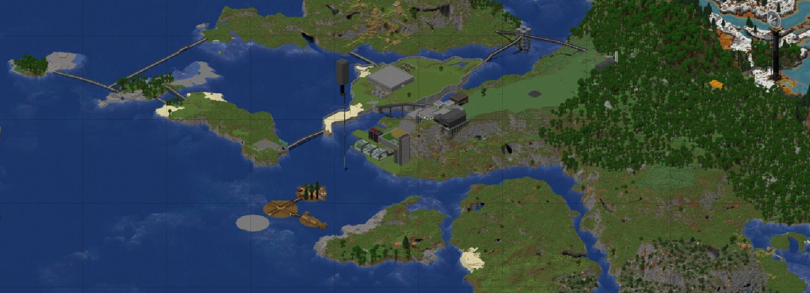
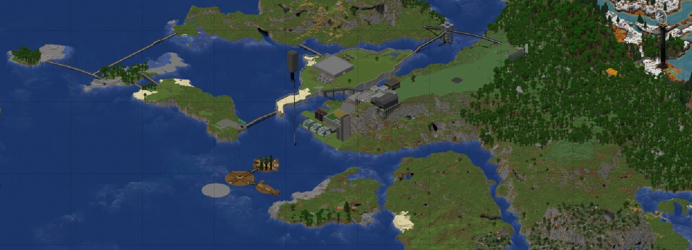

Zde opět šlo o stejný systém, který byl platný na S1, S3, S4 a na S6. Hráči si mohli vytvořit svoji vlastní zemi, nebo se k nějaké existující přidat. Tentokrát se ale kladl důraz na lepší evidenci všech údajů, jako je název země, hlavní město, hlava státu, vlajka či další menší symboly - např. státní znak. Hráči měli opět naprostou volnost v tom, jak svůj stát vést. Tentokrát jsme se setkali s větší celkovou aktivitou a přidalo se i několik nových hráčů. Tato sezóna se také setkala s dosud největším pokrytím na straně médií, viděli jsme hned dvoje aktivní noviny, které rychle ohlašovaly zásadní změny na serveru co se týče politiky. Shrnutím, v této sezóně jsme se setkali s jedním z největších politických rozmachů i díky vzniku nového konceptu, kterým bylo United Nations of Flamacraft.
Toto je mapa z pohledu organizace UNF - United Nations of Flamacraft. Jednalo se o politickou organizaci sdružující dobrovolně připojené členské státy, avšak ne všechny státy, které na serveru existovaly. UNF dělala takový protipól k USDC - Union of Socially Democratic Communites, která na mapě chybí. Je to z důvodu rivality a nesnášenlivosti mezi těmito dvěma stranami po většinu času rozdělené něčím, jako železnou oponou. Na této mapě jsou pouze členské státy UNF.

Tento stát, založený jako první - 27. 1., byl hlavním aktérem při vzniku UNF a jedním z hlavních geopolitických hráčů. Jednalo se o diarchii v čele s králem Matakadym a královnou Mitoast - byli to jediní obyvatelé Mo Idwy. Stát oficiálně vznikl den po královské svatbě na pódiu - pozdějším balkónu v nově spojeném městě T'amo-Anchyo, které se o pár dní později oficiálně stalo hlavním městem. V T'amo-Anchyo, regionu Loso, později vznikl královský hrad. Tento region je také vyobrazen na státní vlajce. K dalším důležitým stavbám v Mo Idwě patří most spojující Loso a Kiwe, Farma v Loftei, centrála UNF v Solose, obchodní centrum Zakka, národní park Kiwe a obchodní vesnice Nup'ur. Existovaly i neveřejné plány k postavení dalšího hradu, konkrétně v regionu Bukku, ale k tomu nikdy nedošlo. Nejsevernější bod Mo Idwy leží na ostrůvku Xaverio, zasvěceném bohu Xaverovi, jehož barvy - černá a světle zelená - nese státní vlajka.


Skyland byl založen jejho jediným obyvatelem Deadem 28. 1. jako druhý stát na serveru. Většina území Skylandu se nacházela na levitujících ostrovech s jádrem v regionech Farm Land a Iron Coast. Skyland byl známý pro své kolonie daleko od jeho jádrové oblasti viz mapa nahoře. Deadův dům, mof farma a satelit v New foundlandu byly jediné stavby Skylandu. A právě o New foundland byla v pozdější fázi vedena debata s USDC, jelikož si dlouho toto území nárokovaly obě země a většinu času o tomto sporu nevěděly.


Tato země byla založena 31. 1. také jejím jediným obyvatelem - Nereditem (dříve Netherit). Jedná se nepopiratelně o nejméně rozvinutou zemi, jelikož její jedinou budovou byl Nereditův domek. Zapsala se ale do historie tím, že Neredit a Dead stáli u zrození Verdant Shieldu. Tato aliance bojkotovala akt, kterým USDC neprávoplatně zabrala část území Neo Ameris pro své vlatní těžební účely. Z Verdant Shieldu (VS) se později stala Verdant Shield Organization (VSO) - organizace patřící pod rámec United Nations of Flamacraft.


USDC byla založena 4. 2. jako nástupnický stát země Prdelín. Tato země se jako jediná ze starších zemí nikdy nepřipojila k UNF i přesto, že jí to bylo několikrát nabízeno i jako obchod s profitem na straně USDC v zájmu sjednotit politické debaty a zesnadnit komunikaci mezi lídry. Tím tedy tvořila tato nejlidnatější země přirozenou oponu k demokratickému světu UNF. USDC se od začátku stavěla ke zbytku serveru izolacionisticky, což bylo jen prohloubeno Alshackým dramatem, viz historie. Ani se zprvu sympatizující Mo Idwou nedokázala USDC udržet dlouhodobý vztah, čímž se definitivně postavila proti všem. To nicméně tamním obyvatelům nevadilo, jelikož se dá říci, že byla USDC zemí nejvyspělejší. Pod vedením Graphita země rostla velmi rychle a dočkali jsme se staveb jako byl velký sklad, industriální farmy, skleníkový komplex, mob farma, továrna (Luj), vesničanské obchodní centrum (St. Kristoff) nebo satelit v Novoalshaku. Ze strany USDC, obývané Graphitem, Toastem, Maxem, GhastMintym, Flidarem, Hanzem a později Ferdisem, jsme se ale dočkali několika přestupků co se týče např. S7 rulesetu.

 


Slonkin Zm bylo založené Dalikem 9. 3., tj. s velkým odstupem od ostatních zemí. Dalik, jediný obyvatel, byl zdejší faraon. I přes vzdálenostní izolaci a nevelkou společenskou aktivitu byla tato země součástí UNF. Nejvýznamnější stavbou zde byla centrální pyramida. Celkově se Slonkin Zm moc neangažovalo a nebylo na mezinárodní politické scéně moc vidět.


Tato země vznikla pouhé 2 dny před koncem serveru, tedy 1. 5. Založil ji Hanz odtrhnutím od USDC ze strachu zpojení svého území do války, do které USDC směřovala. Jedinou stavbou této země byly podzemní bunkry, které se nikdy k válečnému účelu nepoužily. Hanz Immaculate Bunkers vystupovalo neutrálně a po celé 2 dny své existence neaktivně.


Jedná se o historicky první de facto stát, pokud tedy nepočítáme neuznání USDC ze strany UNF. Tento "stát" existoval dočasně na základě uznání UNF, jelikož měl tamní lídr GhastMinty zájem o demokratičtější systém. Harbor Floats bylo po dobu své existence součástí UNF - proto ho UNF mohla a musela uznávat jako suveréní. Rekognice Harbor Floats trvala od 5. 4. do 1. 5. V ten samý den byla tato země oficiálně absorbovaná do nově vzniklého Hanz Immaculate Bunkers, takže území Harbor Floats bylo celkem součástí 3 různých států.


Server odstartoval 26. 1. 2025, spousta hráčů byla přítomna už na prvním dni a v následujících dnech začaly vznikat první státy.
27. 1. Mo Idwa, 28. 1. Skyland, 31. 1. Neo Ameris a 4. 2. USDC.
28. 2. si USDC oficiálně začala nárokovat Neo Ameriský národní park Blazewood, který pro své těžební účely přejmenovala na Alshak.
1. 3. vznikl Verdant Shield - aliance vyvořená mezi Skylandem a Neo Ameris, která měla bojovat proti znečišťování přírody a chránit ji.
To si nicméně USDC interpretovala jako osobní útok a v ten moment začala nenávist východu (USDC) vůči západu (Skyland, Neo Ameris, později celá UNF)
2. 3. Mo Idwa zabrala Mikinie Islands. Byla to odpověď na Unijní anexi Blazewoodu.
Byl tam ale rozdíl takový, že Blazewood byl součástí jiného suvereéního státu, souostroví Mikinije nikoliv.
Tímto krokem pobouřila zastupitele USDC, kteří již souostroví propojili mosty, ale území si oficiálně nenárokovali.
Ten samý den Dead v rámci Verdant Shieldu označil USDC za nepřítele přírody a hrozil vzájemnými ekoonomickými restrikcemi.
Stále 2. 3. odpoledne byla také otevřena první část metra v Mo Idwě.
3. 3. vyšel první příspěvek do novin Idwa Independent, ve kterém toto nově vzniklé periodikum veřejnosti vysvětlilo eskalovanou situaci.
V tom samém dni byla situace nejvyeskalovanější, probíhaly debaty mezi lídry moderované skrz Idwa Independent.
4. 3. jsme viděli menší ústupek ze strany Graphita za USDC. Vyjádřil se k potenciálnímu znečišťování oblasti a řekl třeba, že bude usilovat o to, aby se okolní voy neznečišťovaly.
Debaty pokračovaly.
Později ten samý den Graphite oznámil opuštění Blazewoodu a souhlasila nenárokovat si toto území minimálně 14 dní od 5. 3. Toto tzv. Alshacké týdenní drama USDC prohrála.
Kolem půlnoci z 4. na 5. března Graphite také oznámil přestěhování těžebních nároků do oblasti pojmenované Novoalshak nedaleko od Blazewoodu.
S tímto krokem ale Neredit, prezident Neo Ameris už souhlasil.
6. 3. bylo diskutováno o možnosti připojit se do Verdant Shieldu pro Mo Idwu. Původně Mo Idwa hrála Unii do karet neoficiálním vystupováním proti VS. I Idwa Independent byla nakloněna k USDC.
Unie ale spolupracovat nechtěla ani po tom, co se Mo Idwě podařilo Verdant Shield rozpustit jako alianci a začlenit jako bezvýznamný subjekt pod UNF, které vzniklo 8. 3.
Zřejmě tento krok od sebe Unii a Mo Idwu distancoval a konečně rozdělil svět na východ a západ i přesto, že UNF bylo zázemí čistě pro politiku - ne vojenská aliance.
Vznik organizace UNF se ale neobešel bez problémů, jelikož byl její zakladatel Dead obviněn z falšování podpisů na smlouvě. To se ale rychle vyřešilo a Dead se na politické scéně omluvil.
9. 3. vznikl stát Slonkin Zm, který se po svém založení připojil do United Nations of Flamacraft.
V příspěvku Idwa Independent z 11. 3. už ale byla vidět problematika odmítnutí Unie připojit se do UNF.
13. 3. byl založen Bunkerville jako součást USDC a připojení se hráče Hanze.
Aktualizací mapy ale Graphite omylem obsadil malý ostrov Nasha patřící Mo Idwě jako součást Mikinijských ostrovů.
S touto situací nehodlal nic dělat, USDC nadále nechtěla uznávat teritoriální vody Mo Idwy, Graphite se bránil tím, že Mo Idwa také neuznává jejich hranice - tak proč by měl on uznávat je?
Rozdíl byl ale v tom, že Mo Idwa si nenárokovala žádné území, které si už předtím nárokovala Unie.
Toto přehrocené drama o malý ostrůvek ale vedlo k uvědomění si, že velká část Loje a celý Bunkerville se nachází za 1200b hranicí stanovenou rulesetem.
A tak se vláda Mo Idwa 15. 3. rozhodla definitivně se postavit proti USDC a vyslat jim politickou zprávu tím, že anektuje 100 bloků dlouhé území na jižním pobřeží Loje.
To bylo v souladu s pravidly UNF, která ruleset supervizovala, jelikož v novém UNF zákonu pro členské státy platil místo 1200b limitu limit 1300b.
Nově anektované území, Zukala zone, byl tedy při pozdějším smlouváním použito jako smlouvací síla.
Někteří členové jsou po právu skeptičtí, zda byla tato modifikace rulesetem legitimní, nebo ne.
16. 3. proběhl v UNF 2. meeting, na kterém se debatovalo o tom, jak budeme přistupovat k USDC a jejich expanzi za hranice.
Na něm se členské státy domluvily, že dají reprezentantům USDC na výběr mezi několika možnostmi expanze hranic světa.
Do těchto dealů byl začleněn i vstup Unie do UNF, nicméně USDC se stavila výrazně proti takovému návrhu.
Nakonec si USDC nevybrala ani jednu z možností, které jí byly předloženy.
Mo Idwa tedy byla donucena uzavřít soukromou smlouvu, ve které byly oficiálně rozšířené hranice světa z původních 1200 b na dimenze, které jdou vidět na mapě, za což dostala Mo Idwa zaplaceno 130 diamantů a Unie se stále nepřipojila do UNF.
Byla jí ale v tom samém obchodu vrácena den předem anektována zóna Zukala.
20. 3. bylo metro v Mo Idwě expandováno o 2 další stanice. Zároveň byla postavena nadzemní železnice spojující Loftei a Zakku.
21. 3. začala výstavba Harbor Floats - městského státu uvnitř USDC.
Zároveň ten samý den Unie konečně aktualizovala svou mapu tak, aby odpovídala předchozím ustanovením ohledně hranic světa.
Od začátku jeho existence, lídr Harbor Floats GhastMinty opakovaně vyjadřoval touhu po větší demokracii.
Byl vyslyšen a ve formě uznání jako samostatného státu 5. 4. se mohl následující den, tedy 6. 4. připojit do UNF, kde se mu dostalo demokratického slova.
Sám o svém území ale GhastMinty netvrdil, že je samostatné.
Mohl by si tím býval totiž zhoršit vztahy se zbytkem USDC a žádná z demokratických stran nepřipouštěla ozbrojený konflikt.
Na tom samém meetingu 5. 4. se písnička Minecraftu král stala hymnou UNF.
1. 5. dopoledne bylo vydáno ultimátum ze strany USDC mířené na všechny členské státy UNF. Ty se měly buďto podvolit dobrovolně, nebo silou. Na odpověď měly státy tři dny, ale později byl čas zkrácen na dny dva
Tato zpráva otřásla celým zbytkem serveru, v jedné z debat na půdě UNF GhastMinty, delegát z Harbor Floats prohlásil, že jeho "stát" neodmyslitelně patří k USDC a na Unijní straně také bude bojovat.
Pak se dovolil divit, proč ho UNF smazala ze své oficiální mapy.
Stejný den také začaly propagandistické akce Tanzim Fateh el Qureyshi (tou dobou Elam El-Jihad), v nichž jediný představitel Ferdis hrozil zkázou a terorismem.
Jeho propaganda pokračovala i cca týden po skončení serveru.
2. 5. ultimátum zpracovalo i periodikum Idwa Independent a 3 ze 4 členských států se začaly připravovat na válku.
Vedle toho taky byl v Mo Idwě spáchán atentát nastraženou pastí. Matakady, pastí zasažený, obvinil z teroristického útoku Ferdise a obracel se s důkazy na jeho žíhádskou propahandu.
Později se ale ukázalo, že útok zinscenoval, aby představil Ferdise ve špatném světle.
Ten samý den později Matakady v rámci přípravy na válku zaminoval i celý Luj - oblast v USDC.
Přípravy pokračovaly ještě ten večer a 3. 5. brzy nad ránem.
v rámci těchto příprav bylo založené respawn centrum ve struktuře včelího úlu mezi Lojem a Novoalshakem, byla postavena obranná zeď na jižní straně zabraného Redstone townu a k tomu jeden tnt kanón mířící na jeden ze dvou mostů spojující Prdelín a Redsone town,
bylo také postaveno celkem 5 obranných věží kolem jádra Mo Idwy, ale 3 z toho byly pouhé makety.
Také byl pochopitelně zdí obestavěn celý hrad v T'amo-Anchyo, byl zaminovaný přístupový most a po hradě schované pasti, stasis chambery a zásoby do krutého boje.
K vyhlášení války došlo v sobotu 3. 5. v 11:30, jenže ne ze strany USDC, nýbrž ze strany koalice Mo Idwa, Skyland a Neo Ameris. Bylo to kvůli momentu překvapení.
Po vyhlášení války se čekalo, zastupitel USDC se nejdřív snažil válku oddálit o celý den. Na to Skyland nepřistoupil.
Plán koalice tří členských států byl jasný. Matakady čekal na zdi v Redstone town, Dead čekal na Skylandu a Neredit čekal v T'amo-Anchyo připravený použít stasis chambery nastavené od Matakadyho a Deada.
USDC si dalo na čas, a tak se Matakady infiltroval pomocí tunelů přes lékárnu pod Grafitův hlavní sklad, odkud čekal, co se bude dít. Už chtěl na samotného Toasta zaútočit ze zálohy zespodu a nechat ho propadnout se do lávy, ale těsně před tím, než se to rozhodl udělat, Toast odešel.
Za nedlouho byli Graphite s Toastem v T'amo-Anchyo, kde hledali nejlehčí přístupovou cestu do dobře opevněného hradu.
Mezi tím se Deadovi a Matakadymu podařilo se vrátit do Mo Idwy, aby mohli bránit, jelikož stasis chamber nefungoval.
Bitva ale nebyla dlouhá a ke kapitulacím postupně Mo Idwy, Skylandu a Neo Ameris došlo během 100 minut.
Válka byla oficiálně u konce v 13:57, když poslední zúčastněný podepsal Lujský mír.
Ten diktoval všem poraženým vstup do tzv. Commonwealthu národů, rozopštění UNF, změnu vlajek poražených.
Dalšími podmínkami bylo vydání Mikijiných ostrovů, vrácení 50% z diamantů zaplacených Unií za rozšíření hranic světa, vydání Sakura ostrova, na kterém měl vzniknout teroristický stát TFEQ hráče Ferdise.
V průběhu války došlo k několika nelidským teroristickým útokům vyprovokovaným Ferdisem, který srovnal celý Skyland se zemí, na což bylo ze všech stran pohlíženo negativně.
Sezóna tímto klimaxem 3. 5. oficiálně končí, kdy svět ovládla USDC.